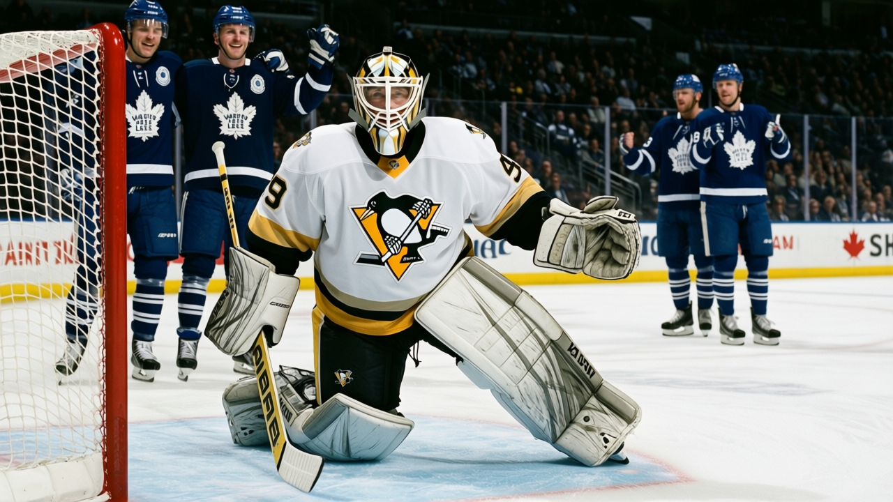
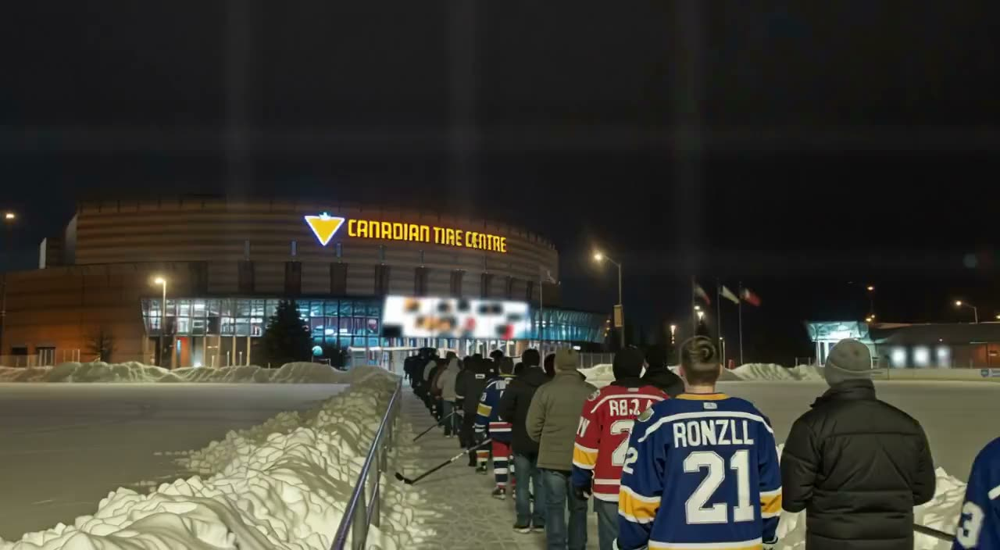
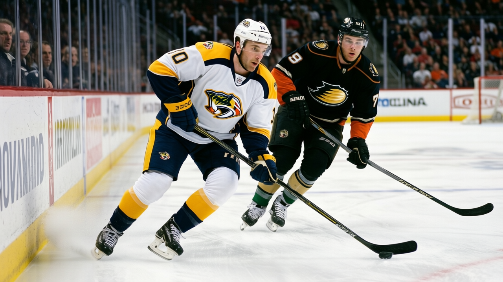
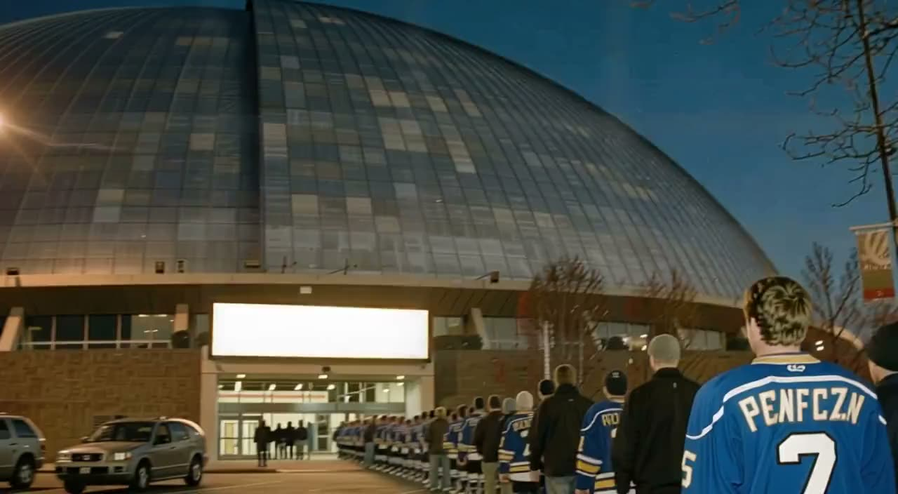

Notes from the East: Carolina's division lead is built on a 30-game schedule and seven overtime games
The Hurricanes beat Edmonton 6-0 to reach 41 points and first in the Southeast on the league's busiest schedule


 Ray Callum·1 min read
Ray Callum·1 min readThe Hurricanes beat Edmonton 6-0 to reach 41 points and first in the Southeast on the league's busiest schedule
Ray Callum·1 min read




The night's pick of the fixtures, on tape: it went to overtime; the clubs put 9 goals between them.

 Home Ice Network·1 min read
Home Ice Network·1 min read
The Lightning's 7-1 over the Oilers keeps a 7-3 run alive and puts them 3 points behind Carolina.

 Ray Callum·2 min read
Ray Callum·2 min read
Three netminders, one crease, and a team that scored zero on 13 shots.

 Luc Pelletier·1 min read
Luc Pelletier·1 min read
The Avalanche are 20-4-0 with the league's best road record and two 84-overall forwards out

 Ray Callum·1 min read
Ray Callum·1 min readToronto's 10-game heater has been built on suffocating defence, while New Jersey just sat down its all-time wins leader. Both netminders face a Saturday reckoning.

 Ray Callum·2 min read
Ray Callum·2 min read
Ari Ahonen moves into the crease for the league's lowest goals-against total

 Ray Callum·1 min read
Ray Callum·1 min read